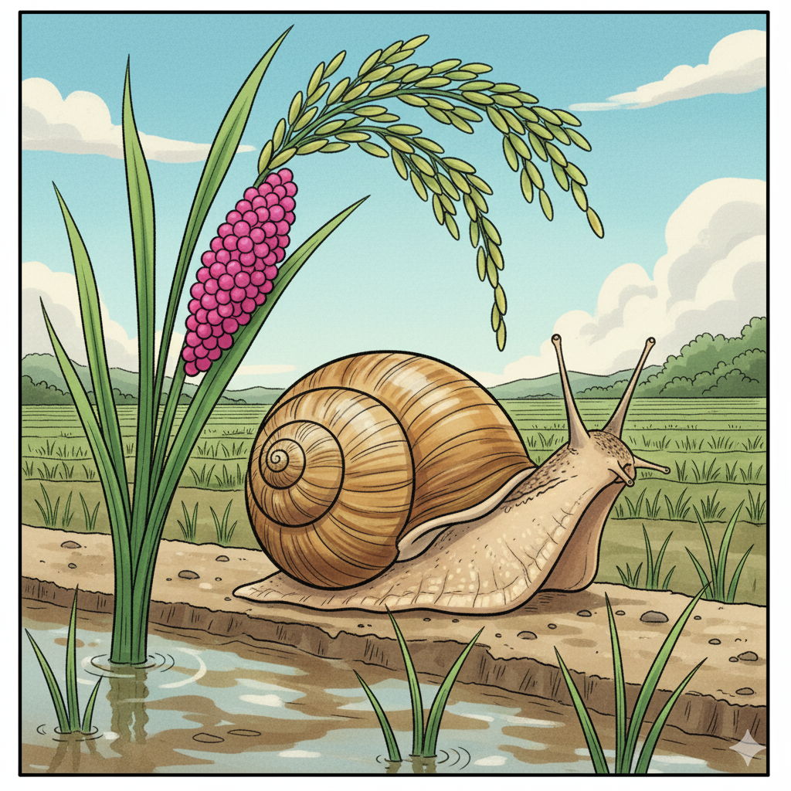
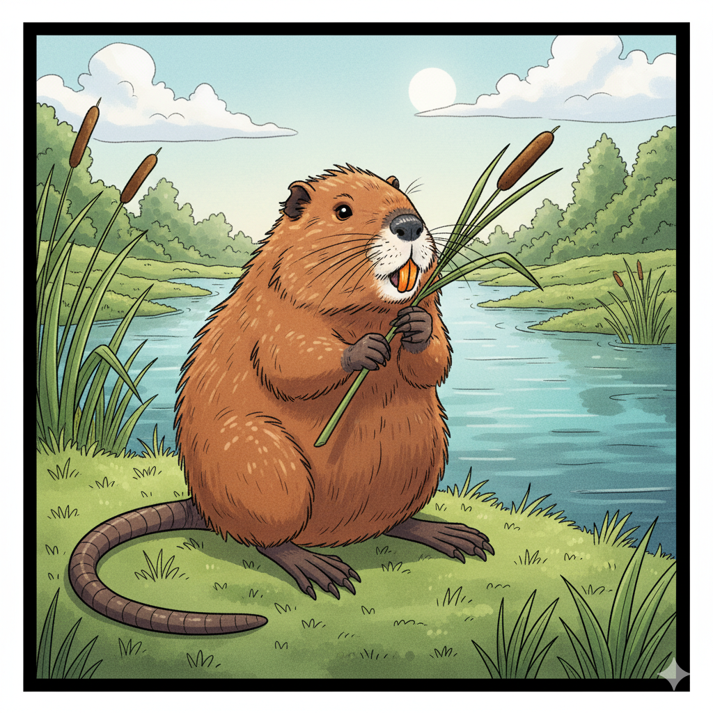
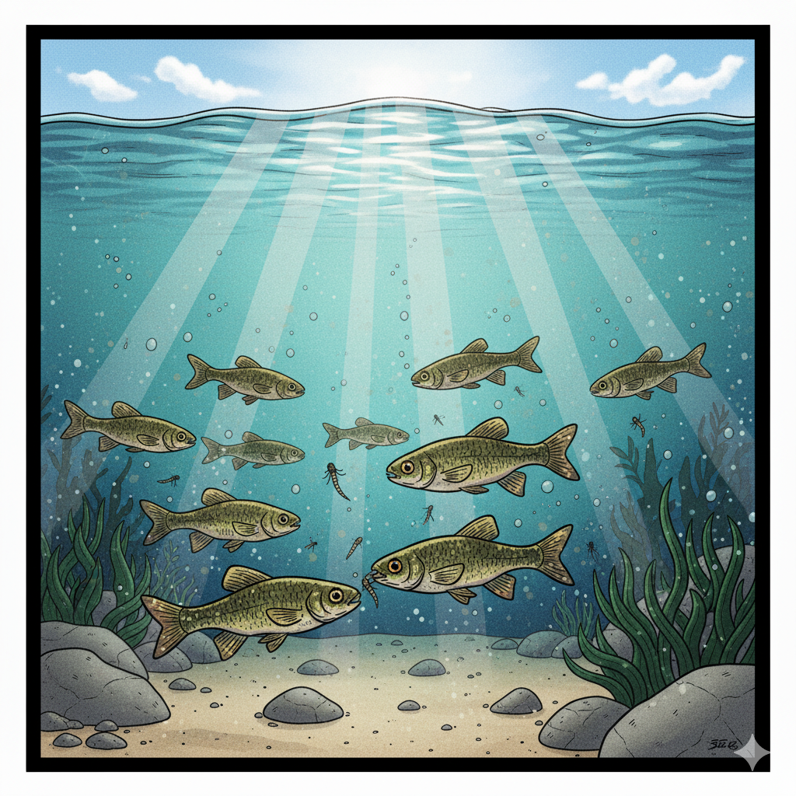
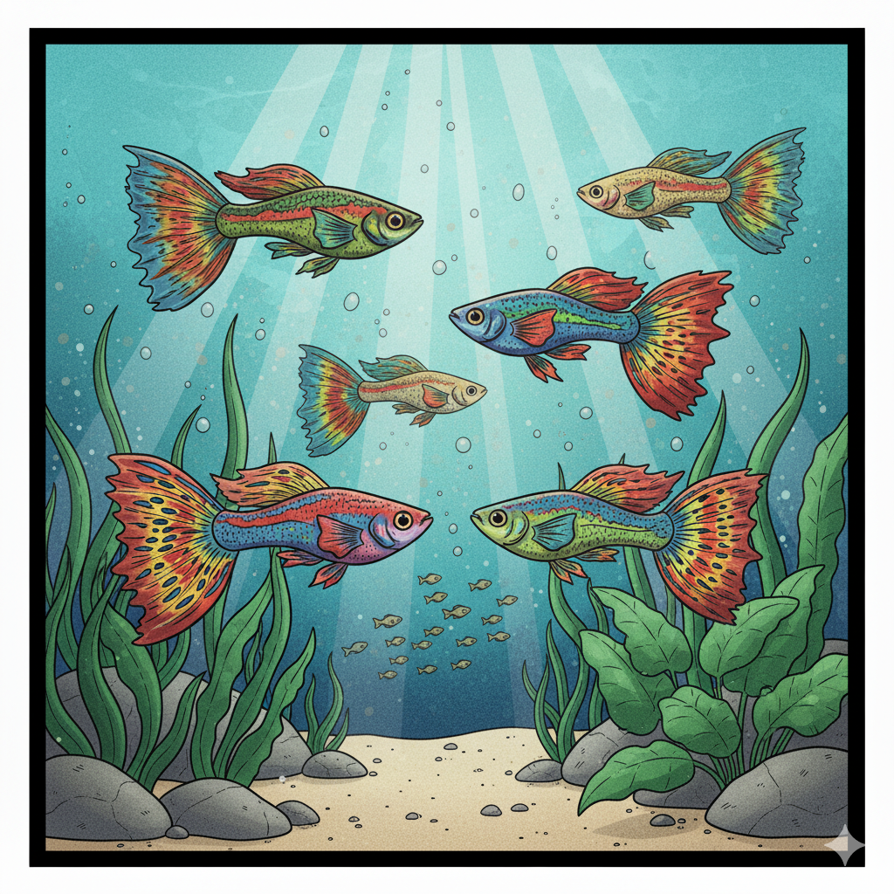
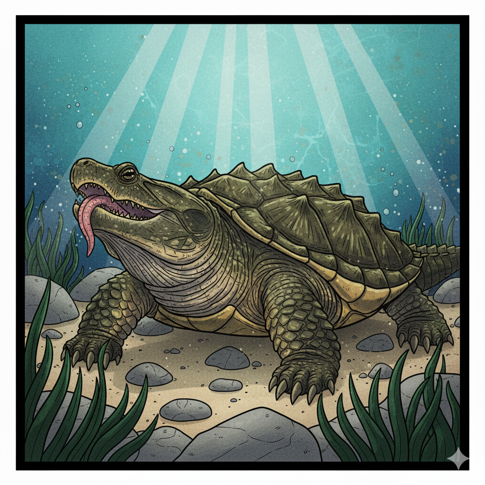

外来種リスト (11種)

条件付特定外来生物
アメ●カ●リガニ
ヒント: 🇺🇸 + 🦞
危険が迫ると、自分でハサミや足を切り離して逃げることがある。（自切）

生態系被害防止外来種
ジャ●ボ●ニシ
ヒント: 🐘(ジャンボ) + 🐚
鮮やかなピンク色の卵の塊には毒があり、鳥なども食べない。

生態系被害防止外来種
シベ●ア●タチ
ヒント: 🇷🇺(シベリア) + 🐾
見た目は可愛らしいが、ニワトリを襲うことも。冬と夏とで毛の色が変わる。

特定外来生物
ブ●ッ●バス
ヒント: ⚫️(ブラック) + 🐟
正式名は「オオクチバス」。口が大きく、自分より小さな生き物を丸呑みにする。

条件付特定外来生物
アカ●ミ●メ
ヒント: 🔴(アカ) + 👂(ミミ) + 🐢
ペットショップでは「ミドリガメ」の名前で売られていた。耳の後ろの赤い模様が名前の由来。

特定外来生物
ヌー●リア
ヒント: 🐀 + 🦷(キバ)
特徴的なオレンジ色の前歯（門歯）は一生伸び続ける。

特定外来生物 (※)
ハ●ビ●ン
ヒント: ⚪️(ハク) + 👃(ビ＝鼻)
「白鼻芯」と書く。その名の通り、額から鼻先にかけての白い線が最大の特徴。

特定外来生物
ブ●ー●ル
ヒント: 🔵(ブルー) + "Gill"(エラ)
「ギル」は「エラ」の意味。エラ蓋の後ろにある青黒い模様が名前の由来。

特定外来生物
ワ●ガ●
ヒント: 🐊(ワニ) + 🐢
口の中でミミズそっくりの舌を動かし、魚をおびき寄せて捕食する。

特定外来生物
カ●ヤ●
ヒント: 🦟(カ) + 🐟
「蚊絶やし」が名前の由来。ボウフラを食べる益魚として日本に持ち込まれた。

生態系被害防止外来種
グ●ピー
ヒント: 🐠(熱帯魚)
「ミリオンフィッシュ」と呼ばれるほど、非常にたくさん子供を産む。
※危険度レベルについて
このパネルでの危険度分類は、環境省の「外来生物法」に基づいています。
- 特定外来生物: 生態系や農作物に甚大な被害を及ぼすため、法律で飼育・輸入・運搬などが原則禁止されています。（例：ブラックバス、ヌートリア）
- 条件付特定外来生物: 特定外来生物の一部ですが、ペットとしての飼育が広く普及しているため、一部の規制（販売・放出の禁止など）が適用されます。（例：アメリカザリガニ、アカミミガメ）
- 生態系被害防止外来種: 法律による規制はありませんが、生態系への影響が懸念され、注意喚起が行われている生物です。（例：ジャンボタニシ、グッピー）
- (※) ハクビシンは外来生物法上の指定はありませんが、農作物被害が深刻なため「重点対策外来種」として扱われることがあり、ここでは特定外来生物に準じています。